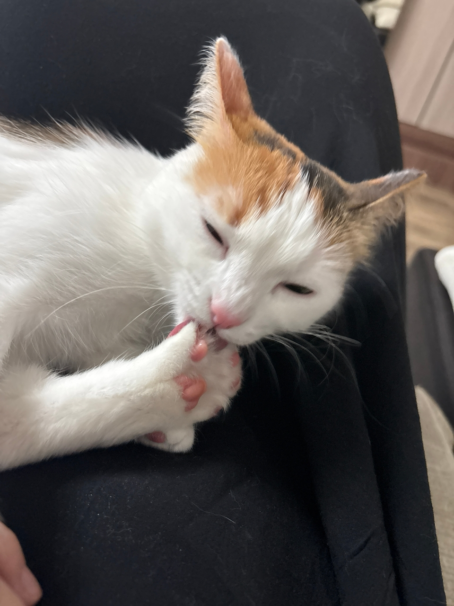
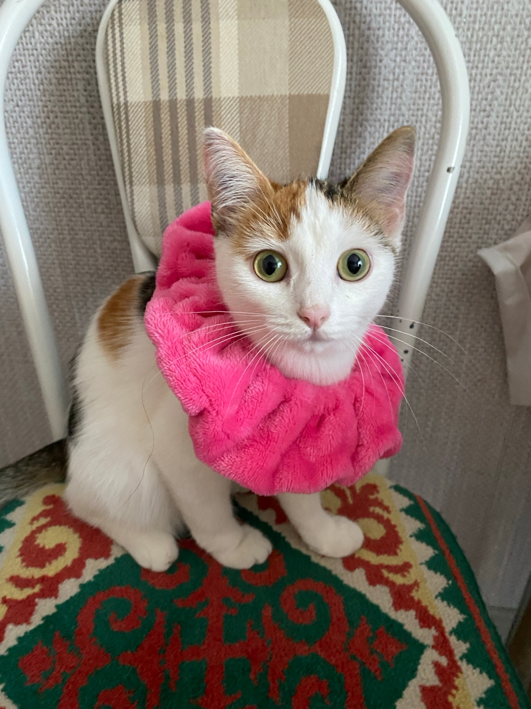
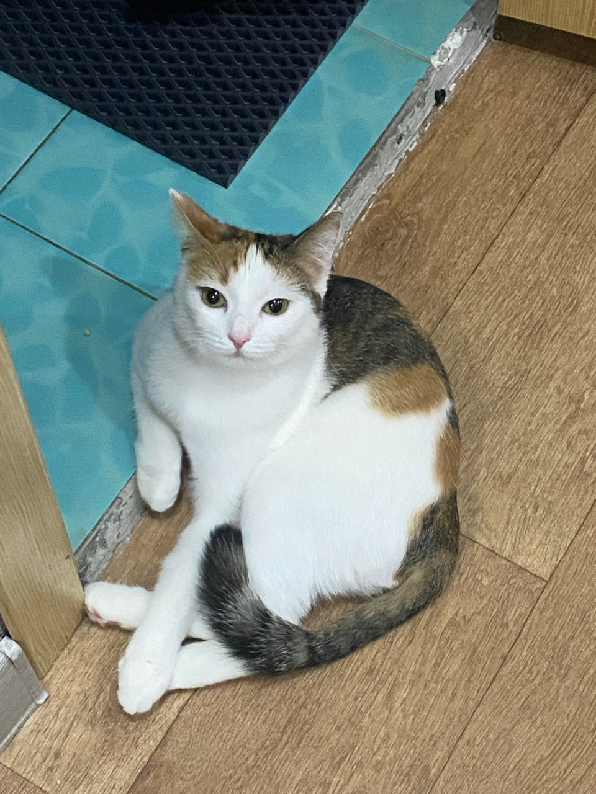
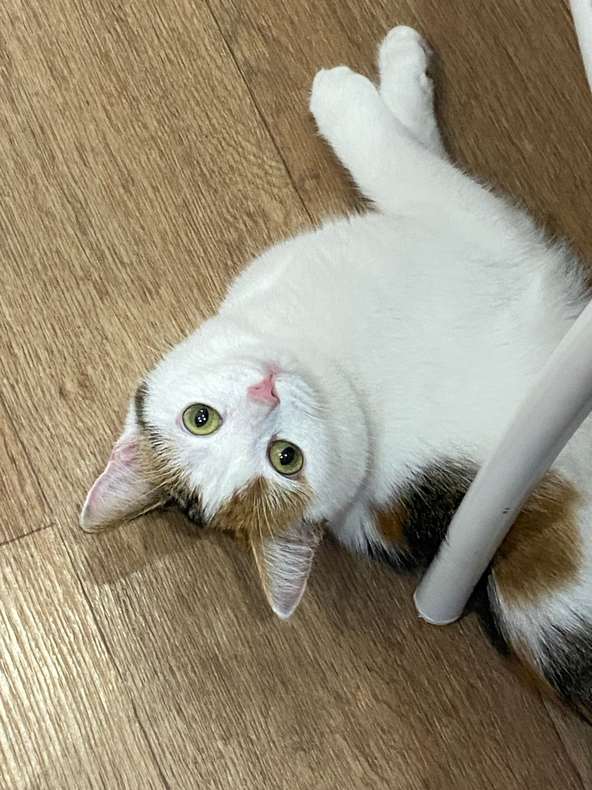
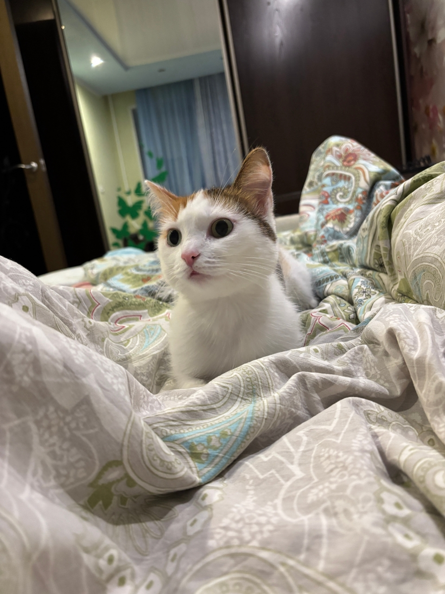
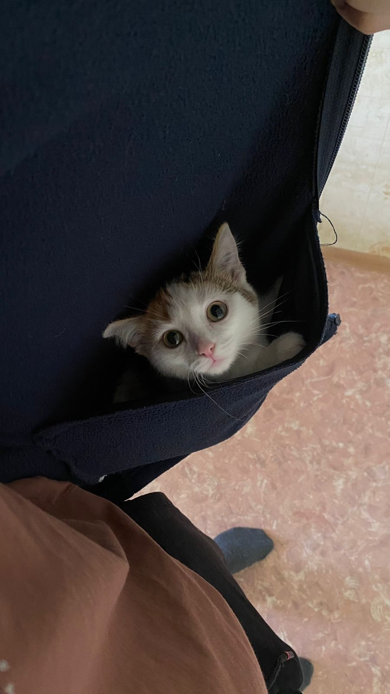
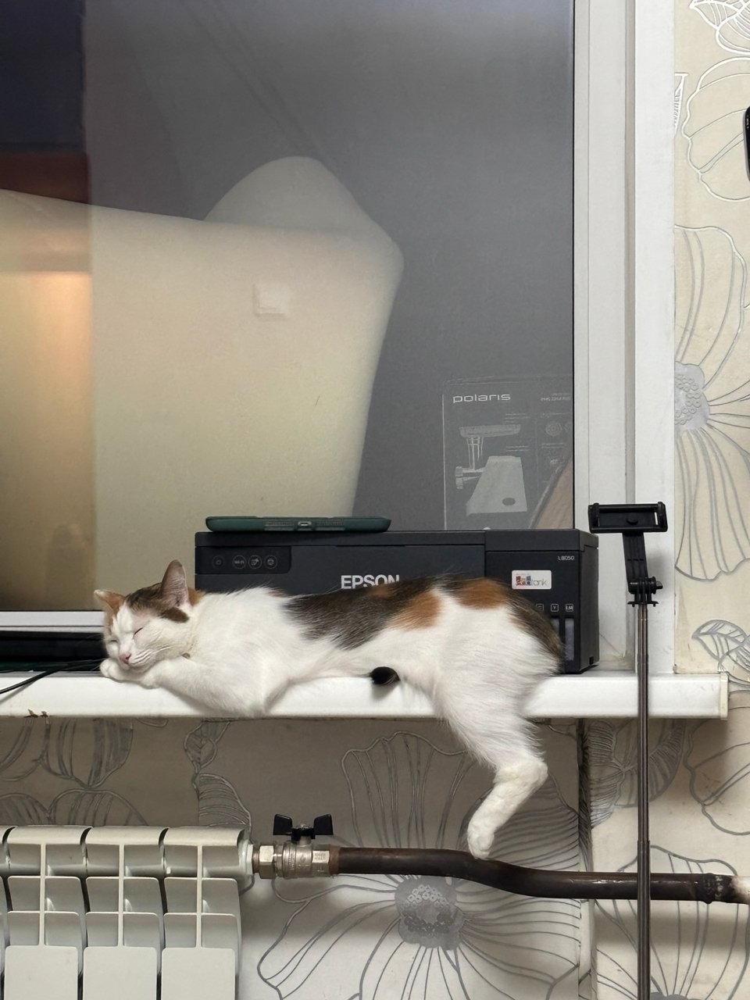
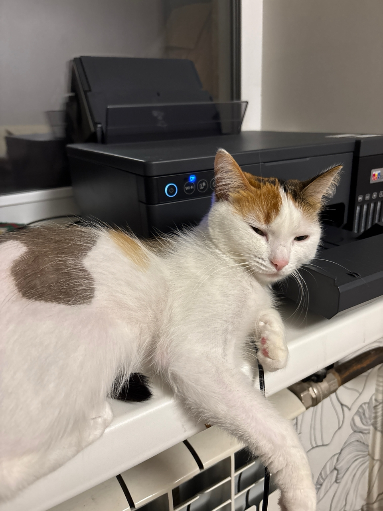
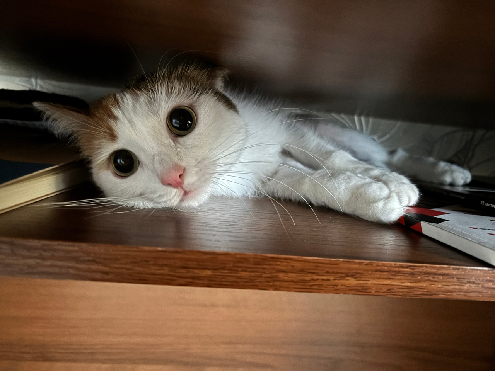

Повседневная жизнь
Каждый день Муиззы проходит по-своему интересно. Она любит играть с нами, бегать за игрушками и наблюдать за всем, что происходит вокруг.
Одно из её любимых занятий — лежать на подоконнике и смотреть в окно. Там она может часами наблюдать за птицами, людьми и машинами.
Когда Муизза устаёт, она отправляется отдыхать в свою маленькую лежанку. Там ей особенно уютно и спокойно. Иногда она сворачивается клубочком и может проспать несколько часов подряд.
Несмотря на любовь к отдыху, Муизза всегда находит время для игр и общения. Благодаря этому каждый день с ней становится немного веселее.








